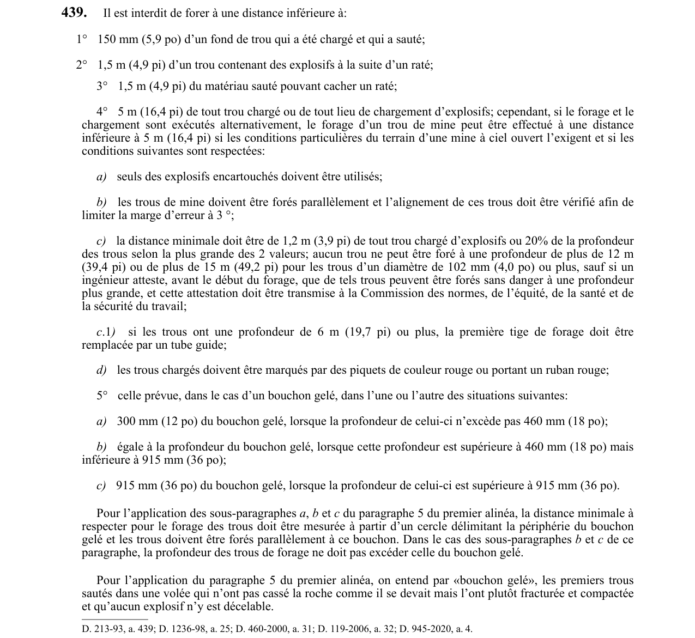

art-439-RSSM : distances minimales de forage près d'un trou chargé
L'article fixe cinq distances de sécurité en deçà desquelles il est interdit de forer, et encadre la seule dérogation possible, celle du forage et du chargement exécutés en alternance à ciel ouvert.
- Distances de base : 150 mm (5,9 po) d'un fond de trou déjà chargé et sauté, 1,5 m (4,9 pi) d'un trou contenant des explosifs après un raté, 1,5 m (4,9 pi) du matériau sauté susceptible de cacher un raté, et 5 m (16,4 pi) de tout trou chargé ou de tout lieu de chargement.
- Dérogation à ciel ouvert, si forage et chargement alternent et que le terrain l'exige : explosifs encartouchés seulement, trous forés parallèlement avec alignement vérifié et marge d'erreur limitée à 3 °, distance ramenée à la plus grande des deux valeurs entre 1,2 m (3,9 pi) de tout trou chargé et 20 % de la profondeur des trous, trous chargés repérés par piquets rouges ou ruban rouge.
- Tube guide : dès que les trous atteignent 6 m (19,7 pi) de profondeur, la première tige de forage est remplacée par un tube guide.
- Plafond de profondeur sous la dérogation : 12 m (39,4 pi), ou 15 m (49,2 pi) pour les trous de 102 mm (4,0 po) de diamètre et plus, sauf attestation d'un ingénieur établie avant le début du forage et transmise à la CNESST.
- Bouchon gelé, entendu comme les premiers trous d'une volée qui ont fracturé et compacté la roche sans la casser et sans explosif décelable : 300 mm (12 po) si sa profondeur ne dépasse pas 460 mm (18 po), une distance égale à sa profondeur entre 460 et 915 mm (18 à 36 po), 915 mm (36 po) au-delà de 915 mm; la distance se mesure à partir du cercle délimitant la périphérie du bouchon, les trous sont forés parallèlement à celui-ci et, dans les deux derniers cas, leur profondeur ne peut excéder celle du bouchon.
🌐 LegisQuébec · 📄 PDF officiel
Texte officiel
Il est interdit de forer à une distance inférieure à:
1° 150 mm (5,9 po) d’un fond de trou qui a été chargé et qui a sauté;
2° 1,5 m (4,9 pi) d’un trou contenant des explosifs à la suite d’un raté;
3° 1,5 m (4,9 pi) du matériau sauté pouvant cacher un raté;
4° 5 m (16,4 pi) de tout trou chargé ou de tout lieu de chargement d’explosifs; cependant, si le forage et le chargement sont exécutés alternativement, le forage d’un trou de mine peut être effectué à une distance inférieure à 5 m (16,4 pi) si les conditions particulières du terrain d’une mine à ciel ouvert l’exigent et si les conditions suivantes sont respectées:
a) seuls des explosifs encartouchés doivent être utilisés;
b) les trous de mine doivent être forés parallèlement et l’alignement de ces trous doit être vérifié afin de limiter la marge d’erreur à 3 °;
c) la distance minimale doit être de 1,2 m (3,9 pi) de tout trou chargé d’explosifs ou 20% de la profondeur des trous selon la plus grande des 2 valeurs; aucun trou ne peut être foré à une profondeur de plus de 12 m (39,4 pi) ou de plus de 15 m (49,2 pi) pour les trous d’un diamètre de 102 mm (4,0 po) ou plus, sauf si un ingénieur atteste, avant le début du forage, que de tels trous peuvent être forés sans danger à une profondeur plus grande, et cette attestation doit être transmise à la Commission des normes, de l’équité, de la santé et de la sécurité du travail;
c .1 ) si les trous ont une profondeur de 6 m (19,7 pi) ou plus, la première tige de forage doit être remplacée par un tube guide;
d) les trous chargés doivent être marqués par des piquets de couleur rouge ou portant un ruban rouge;
5° celle prévue, dans le cas d’un bouchon gelé, dans l’une ou l’autre des situations suivantes:
a) 300 mm (12 po) du bouchon gelé, lorsque la profondeur de celui-ci n’excède pas 460 mm (18 po);
b) égale à la profondeur du bouchon gelé, lorsque cette profondeur est supérieure à 460 mm (18 po) mais inférieure à 915 mm (36 po);
c) 915 mm (36 po) du bouchon gelé, lorsque la profondeur de celui-ci est supérieure à 915 mm (36 po).
Pour l’application des sous-paragraphes a , b et c du paragraphe 5 du premier alinéa, la distance minimale à respecter pour le forage des trous doit être mesurée à partir d’un cercle délimitant la périphérie du bouchon gelé et les trous doivent être forés parallèlement à ce bouchon. Dans le cas des sous-paragraphes b et c de ce paragraphe, la profondeur des trous de forage ne doit pas excéder celle du bouchon gelé.
Pour l’application du paragraphe 5 du premier alinéa, on entend par «bouchon gelé», les premiers trous sautés dans une volée qui n’ont pas cassé la roche comme il se devait mais l’ont plutôt fracturée et compactée et qu’aucun explosif n’y est décelable.
Texte de l’article 439 RSSM, extrait de la couche texte du PDF officiel (page 114), sans OCR ni retouche. La capture ci-dessous et le PDF font foi.
{kind=link}

Toucher l'image pour l'agrandir🔗 Voir art. 439 RSSM dans le PDF (page 114)
Version : texte officiel du RSSM (RLRQ c. S-2.1, r. 14), à jour au 1er mai 2024 — Éditeur officiel du Québec
Voir aussi
- art. 438 : fois front taille examiné fonds · obligation : une fois le front de taille examiné conformément aux articles 437 et 437.1, tous les fonds de trous de mine, sauf ceux d’une…
- art. 440 : Malgré trous forés distances moindres · permission : malgré l’article 439, des trous peuvent être forés à des distances moindres que celles prévues à cet article pourvu que le forage…
- ⚖️ Loi habilitante : LSST
- ↑ Index du bloc : Travaux à ciel ouvert et explosifs
Pages qui pointent ici (4)
- art-438-RSSM : marquage des fonds de trous de mine Recueil législatif
- art-440-RSSM : forage rapproché par commande à distance Recueil législatif
- art-454-RSSM : curage d’un trou bloqué lors d’un chargement progressif Recueil législatif
- RSSM : Travaux à ciel ouvert et explosifs (art. 401 à 475) Recueil législatif